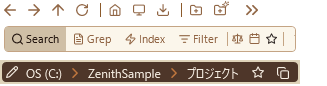
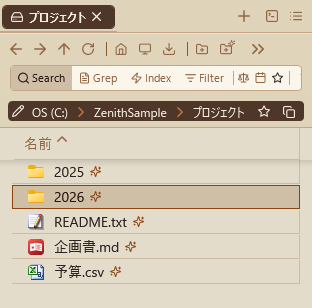
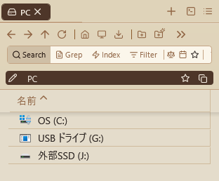
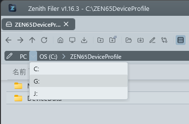
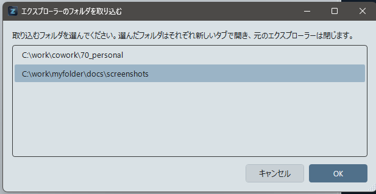
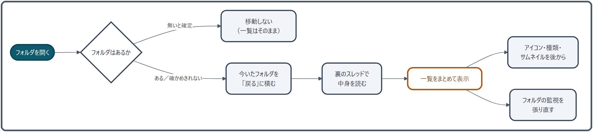

フォルダの移動（ナビゲーション）¶
フォルダを開く・戻る・進む・上へ、PC ビュー、よく使う場所への移動、エクスプローラーとの行き来をまとめます。パンくずやパスの打ち込みで移動する方法は アドレスバーとパンくず を見てください。
できること¶
| したいこと | 操作 |
|---|---|
| フォルダに入る | ダブルクリック、または Enter |
| 直前のフォルダへ戻る／やり直す | Alt + ← ／ Alt + →（マウスのサイドボタンでも可） |
| ひとつ上の階層へ | Backspace |
| ドライブを選び直す | ドライブ直下で「上へ」→ PC ビュー |
| いつもの場所へ | ツールバーのホーム・デスクトップ・ダウンロード |
| エクスプローラーと行き来する | 今のフォルダをエクスプローラーで開く／エクスプローラーで開いているフォルダを取り込む |

移動のボタンはペインヘッダーの 1 行目（アクション行）にまとまっています。戻ったり上へ移ったりすると、直前にいたフォルダにフォーカスが戻るので、キーボードだけで行き来しても迷いません。
使い方¶
開く・戻る・進む・上へ¶
- フォルダを開く: ダブルクリック、または
Enterキー。 -
戻る: ツールバーの「←」ボタン、
Alt + ←キー、またはマウスの「戻る」サイドボタン。戻った先の一覧では、直前に入ったフォルダにフォーカスが当たり、上下キーでその位置から操作を続けられます。

-
進む: ツールバーの「→」ボタン、
Alt + →キー、またはマウスの「進む」サイドボタン。 -
上の階層へ: ツールバーの「↑」ボタン、または
Backspaceキー。戻った先の一覧では、直前に入ったフォルダにフォーカスが当たり、上下キーでその位置から操作を続けられます。
ドライブルート（
C:\等）で「上へ」を実行すると、全ドライブを一覧表示する「PC」ビューに移動します。
キーの割り当ては 設定 → ショートカットキー で変えられます。プリセット「エクスプローラー風」では、Backspace が「戻る」、Alt + ↑ が「上へ」になります。
PC ビュー¶
ドライブルートの上位にある仮想的な最上位階層です。

- PC 上の全ドライブ（ローカルディスク、ネットワークドライブ、リムーバブルディスク等）と、スマートフォンやカメラなどの機器が一覧表示され、ダブルクリックまたは
Enterでそのドライブルートに移動できます。一覧の「種類」の列にはドライブの種類（ローカル・リムーバブル・ネットワークなど）、「サイズ」の列には総容量が入ります。 -
パンくずリストの先頭に「PC」セグメントが常に表示され、クリックで PC ビューに移動できます。「PC」の右の「›」を押すと、ドライブの一覧から選んで移動することもできます。

-
アドレスバーに「PC」と入力して
Enterでも移動できます。 - PC ビューでは、それより上の階層は無いので「上へ」を押しても何も起きません。
よく使う場所へ¶
- お気に入りに追加: アドレスバーの右端にある「★」ボタンを押すと、現在表示中のフォルダをお気に入りに登録します。
- ホームへ移動: ツールバーのホームアイコンをクリックすると、アプリ設定で設定したホームフォルダへ移動します。未設定時は A ペインはデスクトップ、B ペインはダウンロードへ移動します。
- デスクトップへ移動: ツールバーのモニターアイコンをクリックすると、デスクトップフォルダへ移動します。
- ダウンロードへ移動: ツールバーのダウンロードアイコンをクリックすると、ダウンロードフォルダへ移動します。
- パスをコピー: アドレスバー右端のコピーアイコンをクリックすると、現在のフォルダのフルパスをクリップボードにコピーします。
エクスプローラーとの行き来¶
- エクスプローラーで表示: ツールバーのフォルダを開いたアイコンをクリックすると、現在表示しているフォルダを Windows 標準のエクスプローラーで開きます。
-
エクスプローラーのフォルダを取り込む: ツールバーの取り込みアイコン（フォルダを開くアイコンの右隣）をクリックすると、現在開いている Windows エクスプローラーのフォルダをアプリ側に取り込みます。ごみ箱はフォルダではないため取り込めません。ごみ箱を表示しているエクスプローラーはその旨をお知らせして、閉じずにそのまま残します（ごみ箱はナビペインのツリーからも開けます）。
取り込んだフォルダは常に新規タブで表示されます。
- 1 件のみの場合: そのフォルダを新規タブで表示してエクスプローラーを閉じる。
- 2 件以上の場合: 選択ダイアログで取り込む対象を選び、選択したフォルダをそれぞれ新規タブで表示したうえで対象のエクスプローラーを閉じる。

最新の状態にする¶
-
更新:
F5キー、またはツールバーの更新ボタン（フォルダ内容の変更は自動検知されますが、手動更新も可能です）。一覧ビュー・アイコンビューのどちらでも、F5 キーとボタンの両方が使えます。
ネットワークドライブ等でフォルダ監視の接続が切断された場合は、指数バックオフ（1 秒 → 2 秒 → 4 秒 … 最大 30 秒）で自動再接続を試みます。再接続の進行状況はステータスバーに通知されます（「ネットワーク切断を検出。再接続を試行中...」→ 成功時「フォルダ監視を再開しました」）。
最大試行回数（10 回）に達した場合は「フォルダ監視が停止しました。F5 で更新してください」と表示され、F5 キーまたは更新ボタンで手動再接続できます。
しくみ¶
フォルダを開いてから一覧が出るまで¶

- フォルダがあるかを確かめる: 待つのは最大 2 秒（ネットワーク上のフォルダは 0.3 秒）です。「無い」と確定したときだけ移動をやめ、確かめきれなかったときは開いてみます。応答の遅いネットワークで、確認待ちのせいで開けなくなるのを避けるためです。確認の結果は 0.8 秒だけ覚えておき、続けて同じフォルダを開くときは確かめ直しません。
- 「戻る」の履歴に積む: 今いたフォルダを「戻る」に積み、「進む」は空にします（ブラウザと同じ考え方です）。
- 裏のスレッドで中身を読む: 画面は固まりません。読み込みは同時に 1 つだけで、読んでいる途中に別のフォルダへ移ると、あとから頼んだほうが最新の場所を読み直します。
- 一覧をまとめて表示する: 並べ替えまで裏で済ませてから、一度に差し替えます。行は画面に見えているぶんだけ作るので、何万件のフォルダでも描画は軽いままです。
- アイコン・種類・サムネイルは後から: まず拡張子ごとの汎用アイコンで出し、本物のアイコンと種類を 200 件ずつ裏で埋めていきます。サムネイルや大きなアイコンは、見えている範囲のぶんだけ取りに行きます。
- フォルダの監視を張り直す: 外からファイルが増えたり消えたりすると、自動で一覧に反映します。変化は 0.12 秒ぶんまとめて受け取り、一覧の更新は 0.5 秒（クラウド同期のフォルダは 2.5 秒）に 1 回までに抑えます。同期ソフトが大量のファイルを書き換えても、一覧がちらつき続けないようにするためです。
戻る・進むの履歴¶
- 履歴はタブごとに、フォルダの場所だけを持っています。選んでいたファイルやスクロール位置は覚えていません。
- 履歴はメモリの中だけにあり、タブを閉じたりアプリを終了したりすると消えます。「タブを複製」したタブは、履歴を持たずに始まります。
- 「戻る」「上へ」のときは、移る前にいたフォルダを覚えておき、一覧を読み終えたところでそこにフォーカスを当てます。読み込みの途中で一覧をクリックしたりキーを押したりした場合は、その操作を優先してフォーカスは動かしません。
PC ビューのドライブの一覧¶
- ドライブの一覧は、裏のスレッドで Windows に問い合わせて作ります。準備のできていないドライブ（ディスクの入っていないカードリーダーなど）は出ません。
- 表示名（「ローカル ディスク (C:)」など）は、エクスプローラーと同じものを Windows から受け取っています。
- 切断されたネットワークドライブがあると、その応答を待つあいだ一覧が出るのが遅れることがあります。画面は固まらないので、別のタブやペインはそのまま使えます。
関連¶
- アドレスバーとパンくず — パンくずやパスの打ち込みで移動する
- タブ操作 — 新しいタブでフォルダを開く
- お気に入り管理 — よく使うフォルダを登録する
- ナビペイン — ツリー・参照履歴から移動する
- キーボードショートカット一覧 — 移動のキーを変える